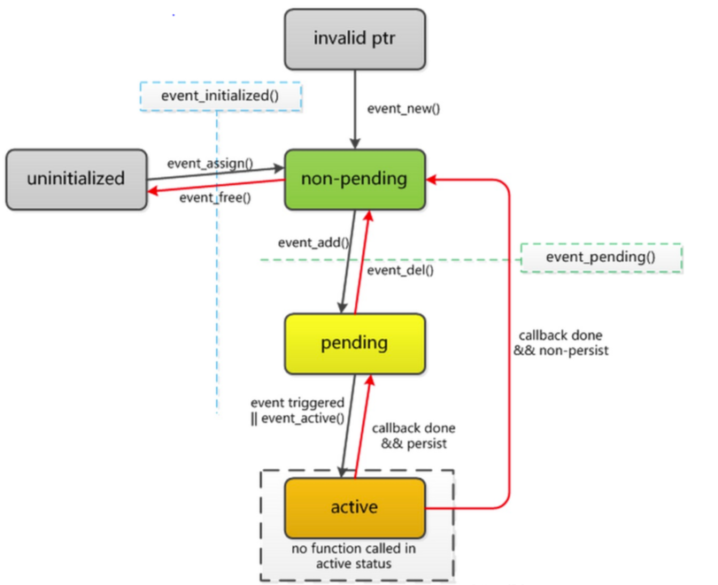
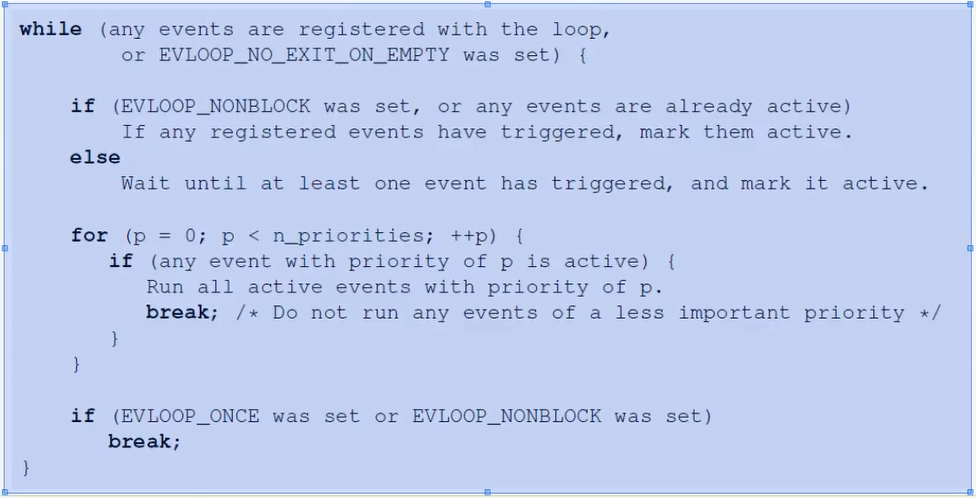

1. non-pending 未待决状态
2. pending 待决状态 可以开始处理事件
3. active 激活状态 事件已经发生
4. uninitalized 未初始化状态 空间分配方面
/*
【base】
【fd】 文件描述符 evutil_socket_t就是int类型,取值可以为-1或者其他正整数
【events】 需要监控的事件类型 EV_READ, EV_WRITE, EV_SIGNAL(信号), EV_PERSIST, EV_ET,EV_TIMEOUT(此处传入无效)
实际使用不传递事件类型,回调函数仅能被超时事件或者手动激活触发,此时fd = -1
【callback】 事件发生时要调用的回调函数
【callback_arg】 要传递给回调函数的参数
event_new执行返回的结构体指针,是为了后面event_add()和event_del()的使用,
让多个event都在同一个fds上侦听是可以的;但是它们要么全部是边缘触发的,要么全部不是边缘触发的。当事件变成激活状态,事件循环将运行传入的回调函数(回调函数有三个参数)
*/
struct event * event_new(struct event_base *base, evutil_socket_t fd, short events, void (*cb)(evutil_socket_t, short, void *), void *arg)
/*
将event_new生成的对象添加任务安排中,当有特定事件发生或者超时,调用ev的回调函数执行
event对象超时后,如果event对象不为空,可以继续使用event_add操作event对象【TODO 别的事件触发后呢?可不可以再add?】
*/
int event_add(struct event *ev,const struct timeval *timeout)
/*
将event_new生成的对象从任务安排删除,但是event对象还存在
*/
int event_del(struct event *)
/*
检查events对象是否处于pending状态
*/
int event_pending(const struct event *ev, short events, struct timeval * tv)
/*
使事件处于活动状态,可以在挂起或非挂起事件上使用此函数使其处于活动状态 【TODO 参数res没看懂】
*/
void event_active(struct event *ev, int res, short ncalls)
/*
判断event对象是否可以被初始化。event_initialized()函数可用于检查事件是否已初始化。
警告:此函数仅仅用于区分event结构体是否开辟内存空间,如果内存空间开辟的内存空间但是没有初始化,则此函数无法判断
*/
int event_initialized(const struct event * ev)
首先来看一下运行循环的接口,下面是运行循环的伪码和相关接口

/*
event_base对象ev将循环将运行,直到不再有未决任务或激活任务,或者直到有其他调用event_base_loopbreak()或event_base_loopexit()。
相当于 event_base_loop(ev, 0)
*/
int event_base_dispatch(struct event_base * ev)
/*
等待事件变为激活状态,并运行它们的回调函数
falgs 参数为 EVLOOP_ONCE、EVLOOP_NONBLOCK和EVLOOP_NO_EXIT_ON_EMPTY的组合 ,此参数会修改循环等待的机制
EVLOOP_ONCE 0x01 循环直到有一个激活事件,等待所有激活事件回调函数完后退出
EVLOOP_NONBLOCK 0x02 不保持循环,无事件就退出,有多个事件准备好就按照事件优先级调用,然后退出
EVLOOP_NO_EXIT_ON_EMPTY 0x04 就算没有注册事件也不返回，保持循环运行直到 event_base_loopbreak()或event_base_loopexit(),用于多线程添加事件
*/
int event_base_loop(struct event_base * ev, int falgs)
接着是停止循环的相关接口
/*
(1) 没有激活事件时不会退出循环，至少等待一次事件激活并处理完回调函数后再退出
(2) 当等待一次事件激活并处理完回调函数后，如果还没有到超时事件，此时还会继续等待
(3) 如果有连续的事件被激活，则会一直等待处理完事件的回调函数再退出，即使花费的时间超过了超时时间
*/
int event_base_loopexit(struct event_base * , const struct timeval * _time)
/*
执行完当前处理事件后立即退出event_base_loop,如无操作立即退出
终止后,后来的event_base_loop调用依旧正常
*/
int event_base_loopbreak(struct event_base * )
读写水位的默认值均为0,此时读写高低水位机制不启用
/*
设置读写事件的水位
在输入时,bufferevent不会调用用户读取回调函数,除非缓冲区中有不低于lowmark的数据量。
如果读取缓冲区中的数据超过highmark,则bufferevent停止从网络读取。
写水位设置机制不太清楚 以后看源码再补充【TODO】
events 取值 EV_READ, EV_WRITE 或者 EV_WRITE|EV_READ
*/
void bufferevent_setwatermark(struct bufferevent * bufev, short events, size_t lowmark, size_t highmark)
bufferevetn_filter 用于在发送数据之后和接收数据之前再次处理数据,例如对数据进行加密解密、压缩解压缩等操作,将这些操作放到过滤器中,简化了发送数据和接收数据的操作。算是一种解耦。
/*
为已存在的socket创建一个bufferevent上下文对象指针,bufferevent是用于处理缓冲IO的内置类型
struct event_base * base libevent上下文对象指针
evutil_socket_t fd 此fd不允许是管道,可以先赋值-1,后续只需调用 bufferevent_setfd() 或者 bufferevent_socket_connect()
int options 可以赋值0或者BEV_OPT_枚举值可以为BEV_OPT_CLOSE_ON_FREE、BEV_OPT_THREADSAFE、BEV_OPT_DEFER_CALLBACKS、BEV_OPT_UNLOCK_CALLBACKS
*/
struct bufferevent* bufferevent_socket_new(struct event_base * base, evutil_socket_t fd, int options)
/*
设置bufferevent上下文对象指针对应的回调函数
readcb 当有数据要读取时要调用的回调
writecb 当fd准备好写入时要调用的回调
【DONE疑惑 writecb函数的调用,为什么我在其他函数中调用bufferevent_write也会触发writecb调用
writecb的作用是发送数据还是,在使用bufferevent_write发送数据后,writecb会被调用然后做其他操作】
【解惑 libevent的写回调机制可能比较复杂,以后用到再细研究,可以参考下面的博客,所以在不了解机制的情况下,直接使用bufferevent_write发送数据即可】
【网络连接】bufferevent缓冲区的特性介绍
【网络连接】bufferevent_write以及bufferevent工作流程探究
eventcb 当fd上存在事件时要调用的回调
cbarg 回调函数的入参
*/
void bufferevent_setcb(struct bufferevent * bufev, bufferevent_data_cb readcb, bufferevent_data_cb writecb, bufferevent_event_cb eventcb, void * cbarg)